Mushrooms are rare in art. In the Christian world they appear first and chiefly
as illustrations for mycological texts, primarily utilitarian in purpose. Today
our mycological illustrations approach perfection in some of the slick color
engravings of modern mushroom manuals. Henri Fabre's water colors might
also fall under this heading. But Fabre succeeded in doing more than merely
catch the details significant for the student of mushrooms. He perceived and
caught with his brush the eerie strangeness of these diverse creatures, he caught
their grace and mystery, and in his finest compositions he far transcended the
humble functions of the faithful illustrator.
In the earliest illustrations of mushrooms there was a singular unevenness of
quality. Already in Plate XXXII we have shown how excellently a miniaturist in
the zoth century represented the truffle, and how absurd was the first printed
representation of that same truffle (fig. 10), published in Mainz in 1491. On Plate
XXII we reproduced from the same loth century Codex the illustration of the
fomes officinalis, and in contrast with the excellence of the truffle, the miniaturist
here indulged in a startling aberration based on a popular notion that this shelf
fungus possessed sexuality of a quasi-human kind. On the other hand, in the
Hortus Sanitatis where the ill-begotten truffle appeared, the fomes officinalis
was rather well portrayed, growing correctly on the trunk of a larch.
The successive scribes who copied the manuscript of Dioscorides seem to
have followed various traditions in their illustrations, imitating the predecessor
whose work lay before them. The earliest mushroom miniature known to us is
in the Qth century codex of Dioscorides now lying in the Bibliotheque Nationale.1
There the mushrooms look like balloons or cherries or gooseberries. In the same
library there is an nth century (or slightly later) Arabic manuscript of Diosco-
rides, and it is clear that here the miniaturist was working in the same uninspired
tradition, if indeed he was not copying from the 9th century manuscript directly.
The Freer Gallery in Washington possesses a page from yet another Arabic
version, this one written in the year 1224, and here the same globular forms
have degenerated far indeed.
On the other hand, in the Morgan loth century codex there appear three
capped mushrooms of superior lineage, and we permit ourselves to believe
I. In our quest for early mushroom miniatures we have concentrated on mss. of Dioscorides. There are other
promising possibilities that we have not explored, i.e., the mss. of Theophrastus, Nikander, Athenaeus, Galen,
Pliny, and St. Isidore.
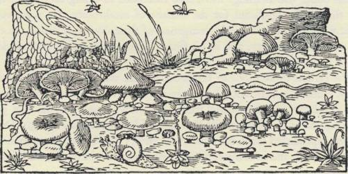
C H A M P I G N O N S .
Fig. 26. Illustration from Matthiolus' Commentaries on Dioscorides, Paris 1578.
that they originated with the same artist who depicted the truffle. How exciting
it would be to discover who he was and when he lived, the original begetter
of this truffle and these mushrooms! Was he perhaps Dioscorides himself, or
that mysterious master whom Dioscorides revered - Cratevas, attendant at the
Court of Mithridates Eupator a century before Christ ? Except in the various
recensions of Dioscorides, we have found mushrooms in only one medieval
manuscript, the illuminated initial in Aldobrandino da Siena's Le Livre pour la
Sante du Corps. And here we discover for the first time a sense of composition.
Six of the mushrooms in this initial might stem back to the illustrations in the
Morgan Dioscorides, but boldly rising above them is a good representation of
a craterellus. We reproduce on Plate LVI this illuminated initial from the Aldo-
brandino manuscript in the Morgan collection, written probably in Rouen
about the year 1450, but copied perhaps from earlier versions going back a
century or two.
With the Hortus Sanitatis in 1491, the tradition of the printed illustration of
mushrooms began. In the 1550'$ the Italian Pietro Andrea Mattioli brought out
his Commentaries on Dioscorides, and this important book quickly passed
through many editions. From the French version published in Lyons in 1578
we reproduce the woodcut accompanying the chapter on mushrooms. Here
for the first time we discover mushrooms in their habitat, growing around a
stump, with snakes about and 'flies' in the air. The illustrator was doing his
best to cope with his text and for the first time mushrooms were being portrayed
against their natural background, as it was then conceived.
Europe's storehouse of art is primarily religious in inspiration, and the religious
art of Europe ignores the whole fungal world. This is not surprising, for mush-
rooms are not mentioned in the Bible1 nor in the Apocrypha nor in the writings
of the Early Church Fathers. Unless we make an exception for the Czech folk
tale that we recounted in Volume I, mushrooms seem never to figure in
hagiographical legends. The deplorable truth must be faced: the Christian
religion has no mushrooms in it anywhere. True, four Saints speak of them,
but of these, three were scholars writing on natural history.2 This leaves the
fourth, and let us turn to what that great man had to say.
We have seen on an earlier page in what low esteem the Protestant divine
Jeremy Taylor held mushrooms. Only a few decades before Taylor's disparaging
remarks, St. Francis of Sales in Geneva was giving vent to kindred emotions
in that extraordinary classic of Catholic piety, the Introduction to the Devout
Life. St. Francis and the Protestant clergyman speak from the identical myco-
phobic tradition, and undoubtedly in the case of these moralists the vogue in
their day of certain fungi as aphrodisiacs reinforced their natural feelings. In
Chapter 33 of Part 3 of St. Francis's book, he turns his attention to 'balls, and
other permissible but dangerous pastimes', and then he goes on:
I say to you about dances, Philotee, what the doctors say about potirons and champi-
gnons, the best are worthless. . . If nevertheless you must eat mushrooms, see to it that
they are well prepared. If for some reason you cannot get out of going to a dance, see
to it that your dancing is well considered . . . Eat few mushrooms and eat them seldom,
say the doctors, for no matter how well prepared they are, in quantity they are venomous.
Dance little and seldom, Philotee, for otherwise you expose yourself to the danger of
becoming addicted thereto. According to Pliny, mushrooms being spongy and porous
easily draw to themselves any infection in the neighborhood, so that when near serpents
they draw to themselves the serpents' venom.
Similarly, continues St. Francis, dances attract vice and sin. And just as after
mushrooms it is wise to drink precious wine as an antitoxin, so after dances one
should concentrate on holy thoughts.
With mushrooms virtually ignored in Christian writings, it is not surprising
that they hardly figure in the mighty river of traditional European art. When
1. In Leviticus xrv: 34-53, there is a description of a 'plague of leprosy in a house' and some mycologists have
seen in it a visitation of the fungus known as the merulius lacrymans. The difficulty with this conjecture is
that the house in question was constructed primarily of stone and mortar, as the text itself makes clear, and the
stone and mortar were infected. The merulius lacrymans attacks timber.
2. St. Isidore of Seville, St. Hildegard, and Albertus Magnus. St. Hildegard was a German nun who in the nth
century composed a medical work entitled Liber Subtilitatutn Diversarum Naturarum Creaturarum. In Book i,
'De Plantis', she described the physiological effects (as she understood them) of the kinds of fungi that grow
on the different species of trees. See J. P. Migne: Patrologics, vol. 197, col. 1194.
once we leave aside the illustrations to mycological texts and turn to the main
corpus of European painting, they are almost wholly absent until the idth
century. We have already discussed on pages 87 ff. the effigy of a Satanic boletus
in Bosch's Hay Wain. This is the earliest mushroom known to us by an Old
Master.
The second is in the same tradition, by a Fleming who was surely a myco-
phobe, Peter Brueghel the Elder. In his allegorical painting The Misanthrope,
dated 1568 and now hanging in the Museo Nazionale in Naples, an aged man
clothed in mourning advances to the left across the open fields, leaving behind
him an horizon apparently aflame with fire and war. A thief, having overtaken
him from behind, is slyly cutting the cord from which the old man's purse is
hanging. The thief is enframed in a shadowy sphere that represents The World.
Beneath the painting is an inscription in Dutch:
Om dat de Werelt is soe ongetru
Daer om gha ic in den ru.
Because the world is so untrue
Therefore go I in mourning.
The face of the old man is not saintly, and it is said that Brueghel himself hesitated
about the name to give to the picture: False Hermit and the Hypocrite were two
of his choices. (Here is our perfect illustration for Tartuffe!) On the path before
the pilgrim are three caltrops, sharp metal points of the kind that the soldiery
in Brueghel's time would strew for enemy horses to step on. For us the exci-
ting detail in this picture is the presence, close above the metal points, of two
mushrooms, and a cluster of vaguely discernible mushrooms to the imme-
diate right of the tree stump. Here again is the 'Devil's bread' of Bosch. These
mushrooms suggest boleti, but with the passing centuries the painting has de-
teriorated and the species cannot be identified. Surely it is fair to assume that
they are the heksenzwam or satanzwam, bathed in the aura of witches or Satan.
Bosch in his painting developed his own iconographic idiom. It is Christian but
unconventional: the Hay Wain is a strange allegory framed inside the
Christian cosmogony. Brueghel's mushrooms are an iconographic symbol in a
painted homily of profane rather than sacred inspiration. Within the confines
of conventional Christian iconography we know of only two paintings, in all
the wealth of Christian art, where mushrooms figure. We are indebted to the
Director of the Prado Museum, Dr. Sanchez Canton, for drawing to our
attention one of them. In the Prado there hangs a superb Adoration of the Magi,
painted c. 1610 by Juan Bautista Mayno, an artist of the Spanish school about
354
MUSHROOMS IN ART
whom little is known beyond the fact that he was a Spanish Dominican born
in Italy. His Adoration bears witness to his high quality as a painter. His crafts-
manship is impeccable, his composition noble, the delicacy of the figures and
faces breathtaking. In the foreground, down below, are two inconspicuous
mushrooms growing among some leaves by the side of an unhewn stone.
The mushrooms belong to the agaricaceae, for one of them shows a ring. The
base of the stipe is concealed by vegetation: we cannot say whether there is a
volva. The mushrooms and their boulder are a sinister counterpoise to the
Light of the World shining through the aperture from above. Exactly what
do they mean?
For Bosch in the Hay Wain, for Brueghel in The Misanthrope, mushrooms
were a symbol of the forces of Satan, and we think that the same meaning
attaches to the mushrooms in Mayno's painting.
The Virgin on her finely chiseled block of stone is goodness, truth, and
beauty. The boulder with the mushrooms growing in a marshy spot is the realm
of unregenerate nature that is now to be offered redemption. Mushrooms
belonged to that armory of demonic symbols which painters used in the I5th
and i6th centuries when preaching to the world about Satan and his works.
It is true that they used mushrooms sparingly, but the symbolism is abundantly
clear. Much more common as symbols of the infernal forces were serpents,
lizards, frogs and toads, beetles, and flying insects; in short, all those creatures
commonly thrown together under the pejorative name of Vermin'.1
Our interpretation of these early mushrooms finds support in a painting by
a fourth master, Herri met de Bles known as Civetta, 'the Owl', who died in
1550. Of the Flemish school, by cultural heritage he belonged to the world
of Bosch and Brueghel. In the Gemaldegalerie der Akademie der bildenden
Kiinste, Vienna, there hangs his Christ Bearing the Cross, a small and exquisite
canvas. The field of the iconographic message in this painting is enframed in the
foreground by a close-up of rough untilled land. We were the first to detect in
this foreground, near the center, two clumps of minute and delicately delineated
mushrooms, and a third clump of the same genus is in the lower right hand
I. The corpus of paintings and sculpture expressing the demonic theme from those centuries is considerable,
and has been the subject recently of an illuminating monograph, Enrico Castelli's II Demoniaco nell'Arte, Milan
and Florence, 1952.
But mushrooms in the i6th century were not always the stigmata of Satan. In the only etching executed by
Peter Brueghel the Elder, The Rabbit Hunt, dated 1566, two mushrooms appear in the lower right foreground.
They carry no iconographic message. Albrecht Dtirer was responsible for a mediocre woodcut of a polypore,
dated 1513; see F. Lippmann's corpus of his works, No. 912, or F. Winkler's, No. 632. In Michel Angelo Ca-
ravaggio's Christ with Disciples at Emmaus (National Gallery, London) there is a basket of fruit among which
the mycologist will detect an apple infected with a fungal parasite.
corner. Only by the aid of a powerful magnifying glass can they be fully per-
ceived and properly admired. These mushrooms are off-stage, so to speak, and
they might be dismissed as a graceful but meaningless phantasy, did we not recall
the sinister meaning of the mushrooms in the works of Bosch and Brueghel.
We lean to the view that here also the mushrooms are symbolic of the Powers
of Darkness, who in this case are working out their woeful role on the highway
to Golgotha.1
In the Dutch still-life paintings of the iyth and i8th centuries there was a
delayed manifestation of the demonic theme in art, a strange and lovely after-
glow that is of peculiar interest to us for the role in it of mushrooms. Among
the scores of accomplished Dutch artists who were at work between 1640
and 1770 were a handful who chose woodland settings for subjects, closeups
of woodland undergrowth, in which we discover serpents, lizards, frogs and
toads, beetles, and flying insects. Often the artists added mushrooms of various
species. These Dutch masters were offering to their customers paintings of
Vermin', creatures that from earliest times had symbolized the Satanic powers.
A century had elapsed since the elder Brueghel's day, and the world had gone
through the spiritual upheaval of the Reformation. The minor creatures of the
woodland still trailed clouds of evil, but the dark emotions that they now
evoked were only reflexes of the former nightmares. They were terrors recalled
in tranquillity and suitable for esthetic delectation.
The originator of this theme in Dutch still-lifes was none other than Otto
Marseus van Schrieck, whose Moth with Mushrooms we have already discussed.
Born in the second decade of the I7th century, he died in the late i67o's. No
one knows under what master he studied. Little is certain about his life beyond
the fact that he lived long in Italy, that he was in Rome in 1652, that he enjoyed
considerable success in his day, and that his peculiar choice of subjects set a
fashion which persisted for a century and more. It is said that, after his return
to Holland, he kept a small private zoo in the garden of his home near Amster-
dam where the creatures that he loved to paint were always ready for his brush.
He was surnamed 'Snuffelaar', one who ferrets.
Van Schrieck was an artist whose work records a deep cultural transition.
On the one hand, he was saturated in the sinister folklore attaching to the humble
creatures that he put on canvas, the dark heritage of past beliefs. Was he not in
i. The Art Museum of Princeton University has lately acquired a companion painting by Civetta, representing
also the procession on the road to Calvary. Strikingly similar in many respects, it even includes mushrooms,
in the foreground on the right hand side, below the owl that is the artist's signature. But they are hesitant and
uncertain as compared with the authority of those in the Vienna painting.
fact the last genuine painter of the demonic tradition? On the other hand, he
was the discoverer of beauty in the lowliest and most despised woodland crea-
tures. He raised even Vermin' to the democracy of the artist's beauteous world.
For the first time snakes and toads were to give esthetic pleasure. He was the
first European to perceive and proclaim the visual beauty of mushrooms. He
studied nature with minute care. A snake was no longer just a snake: it was a
particular species of snake. A mushroom was not just a toadstool, not the Idea
of a fungus such as Bosch had given us. The mushroom world was peopled
with an infinite variety of discrete growths, each worthy of distinct and precise
delineation.
Was not Van Schrieck, in a significant sense, the earliest of the nature painters?
Of course many artists before him had caught the beauty of a landscape. Giants
like Diirer and Leonardo had executed superb studies of individual plants or
animals. Various miniaturists had ornamented the margins of manuscripts with
the profile of a bird or bush, catching to perfection the distinctive line of each.
But Van Schrieck added a new element: centuries before Audubon and
before scientists began to talk about 'ecology', this Dutch painter sensed the
importance of the ensemble of nature, the interdependence of plants and insects
and mushrooms and the wild creatures that lived in the undergrowth. Long
before Linnaeus and the classification of species, he was distinguishing the species
with his artist's eye, and observing the cycle of life in which each lives as a
link. He was the first artist whom naturalists can call their own. All those who
hold wild nature in honor, and especially all amateurs of mushrooms, will pay
homage to this neglected Dutch master, this pioneer in the exploration of
nature's wonders.
A peculiarity of Van Schrieck was his addiction to nocturnal settings. Was
there ever other artist who so specialized in painting the night ? How sensitive
his imagination was to the Stygian blackness of deep night in the woodland
undergrowth! He seems to begrudge even that light which he is forced to use
to give us a picture at all. What we discover in his paintings is caught by the
dazzling illumination from an off-stage light, and the shaft that comes from off
stage stops short with the creatures that he paints. The moth is caught in air as
by a flashlight, but the light does not race on around the moth to strike else-
where. This effect reminds us of those modern spotlights designed with mathe-
matical nicety to illuminate the exact area of a canvas or a sculpture. Of course
Van Schrieck's settings are artificial, like most settings in museums of natural
history, but each component in the picture is vibrant with life and individuality.
The artist is not content with painting symbols and effigies as iconographs.
He is not content with dead models. The demonic message is there in the noc-
turnal scene, but conveyed by living individuals caught in the dance of life and
death. His settings suggest in a way an aquarium, for the buoyancy of the night
air makes itself felt in the way all the creatures and the vegetation seem to float
in a life-sustaining medium. The three Van Schriecks that we reproduce are
chosen for their emphasis on mushrooms. Almost all his paintings include mush-
rooms, but these are extreme in this respect, as also for the blackness of the night.
Our artist's peculiar qualities find full expression in the painting that hangs
in the Herzog Anton Ulrich Museum in Brunswick. Dated 1662, it was probably
executed in Amsterdam. Van Schrieck had just returned from his long sojourn
abroad. As usual, the setting is crepuscular. A tulip is overborne in the coils of
a snake of the species elaphe quatuor-lineata. To the right flies one of the saturnine
moths. A viper is hissing below, and on the ground we discover a bufo calamita
('calamity toad') licking up a slug. This is the toad that the English name the
natterjack. On the left a snake that herpetologists call the coluber viridi-flavus
emerges from behind a clavaria botrytis and then curls through a cluster of
three mushrooms, of which the one in the middle is a russula and the others
are Csesar's amanitas. Flies are crawling on the amanitas, and as Fliegenschwamm
in Van Schrieck's day was a name bestowed on various species, he may have
expected his public to call these mushrooms by that name. The air hangs thick
with evil import, yet each detail is executed with the care of one who enters
fully into the beauty of nature's cruel cycle. Van Schrieck's painting long ante-
dated the scientists' nomenclature, of course; with the artist's eye he was anticipat-
ing their labors.
Van Schrieck's success in his lifetime should not surprise us. He was born
into circles with a sophisticated palate for art, and his contribution was an
original and notable one. He disclosed the beauty of the wilderness with a
subtlety that far surpassed his predecessors. The labored efforts of the early
scientific writers were tedious by comparison with his discourses on wild nature
expressed in line and color. His mushrooms are incomparably superior to those
of the professional illustrators who supplied woodcuts for the text of Clusius,
Bauhin & Co. His influence soon took hold of other artists, some of whom
achieved a more lasting reputation than he. The Neapolitan painter Paolo
Porpora surnamed Pavoluccio Napolitano, a contemporary, imitated Van
Schrieck repeatedly: two Porporas painted in this vein hang in the gallery
of the Banco di Napoli in Naples, and of these we reproduce one.1 Abraham
I. This little known artist is the subject of a study by Raffaello Causa in Paragone (pubhshed in Florence by
Casa Editrice Sansoni), March 1951.
358
PLATES LIX, LX
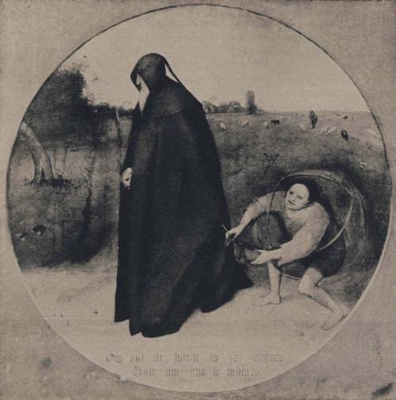
PLATE LIX. Pieter Brueghel the Elder. The Misanthrope. Naples, Museo Nazionale.
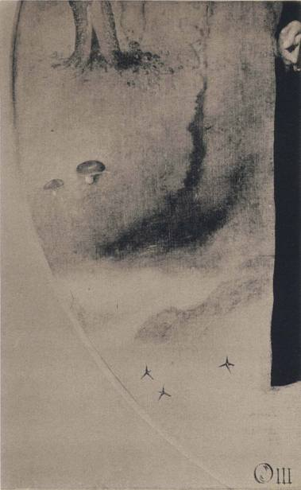
PLATE LX. Pieter Brueghel the Elder. The Misanthrope. Detail. Naples, Museo Nazionale.
PLATES LXI, LXII
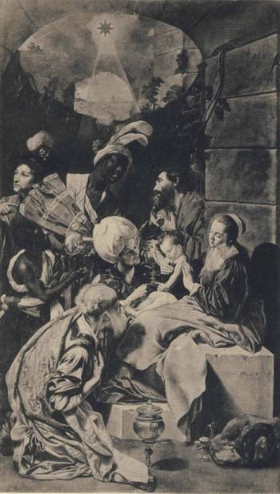
PLATE LXI. Juan Bautista Mayno. The Adoration of the Magi, c. 1610.
Madrid, Prado Museum.
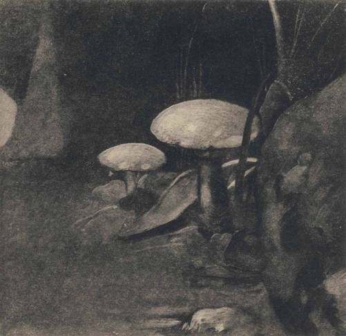
PLATE LXII. Juan Bautista Mayno. The Adoration of the Magi, c. 1610. Detail.
Madrid, Prado Museum.
PLATES LXIII, LXIV
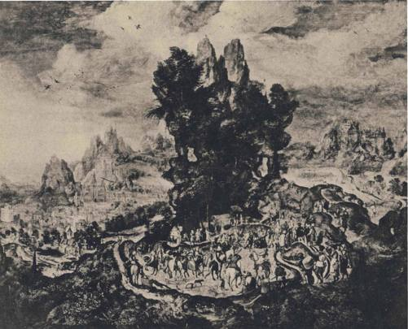
PLATE LXIII. Herri met de Bles ('Civetta% Christ bearing the Cross. Vienna, Gemaldegalerie
der Akademie der bildenden Kiinste.
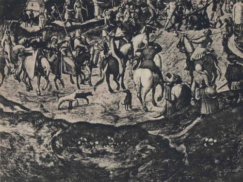
PLATE LXIV. Herri met de Bles ('Civetta'). Christ bearing the Cross. Detail. Vienna, Gemaldegakrie
der Akademie der bildenden Kunste.
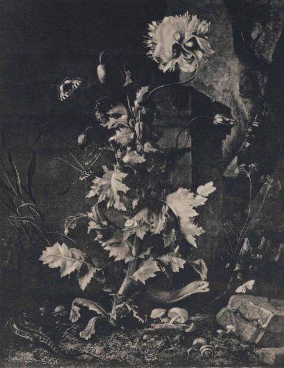
PLATE LXV. Otto Marseus van Schrieck. Poppy with mushrooms.
New York, Metropolitan Museum of Art.
PLATES LXVI, LXVII
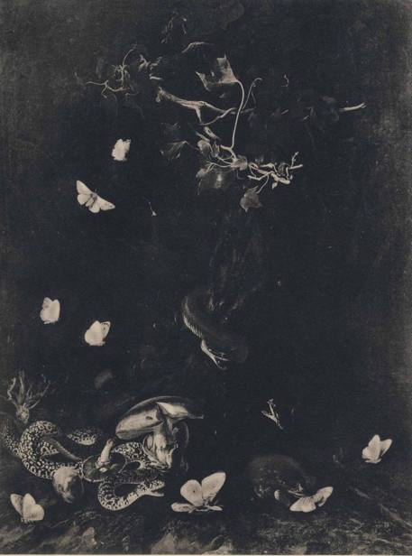
PLATE LXVI. Otto Marseus van Schrieck. Mushrooms. Brunswick, Herzog Anton Ulrich Museum.
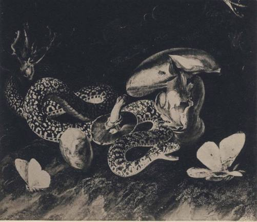
PLATE LXVII. Otto Marseus van Schrieck. Mushrooms. Detail.
Brunswick, Herzog Anton Ulrich Museum.
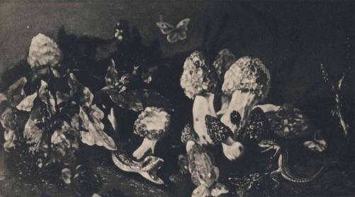
PLATE LXVIII. Paolo Porpora, d. 1673. Still life. Naples, Banco di Napoli.
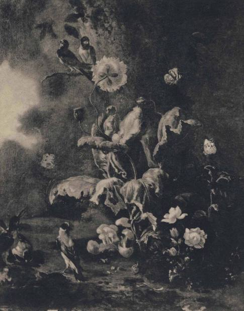
PLATE LXIX. Abraham Begeyn. Still life. Rome, Galleria d'Arte Antica.
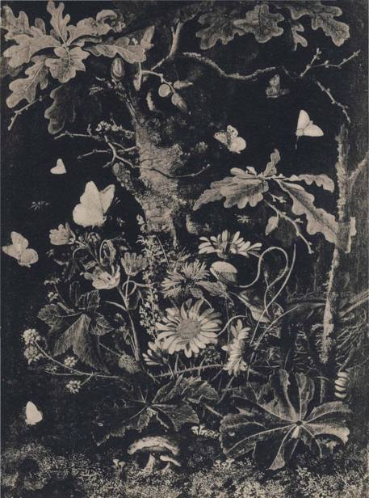
PLATE LXX. Frans Hamilton. Still life. Munich, Bayerische Staatsgemdldesammlungen.
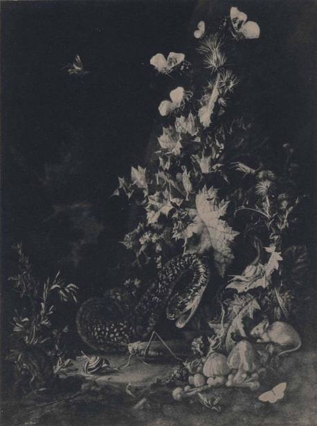
PLATE LXXI. Rachel Ruysch. Still life. Oxford, Ashmokan Museum.
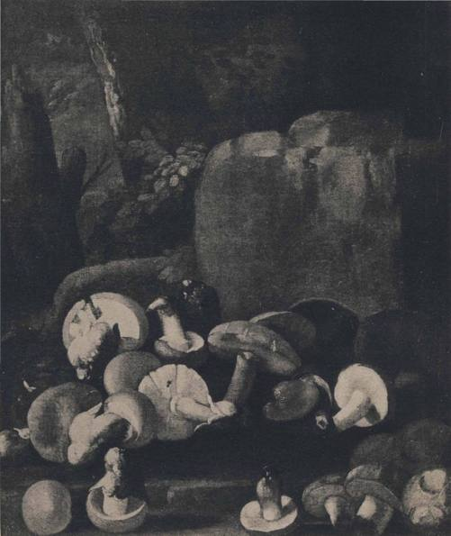
PLATE LXXII. F.W.Tamm. Still life. Private collection.
PLATES LXXIII, LXXIV
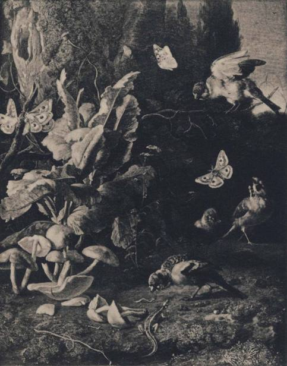
PLATE LXXIII. Melchior de Hondecoeter. Still life. Amsterdam, Rijksmuseum.
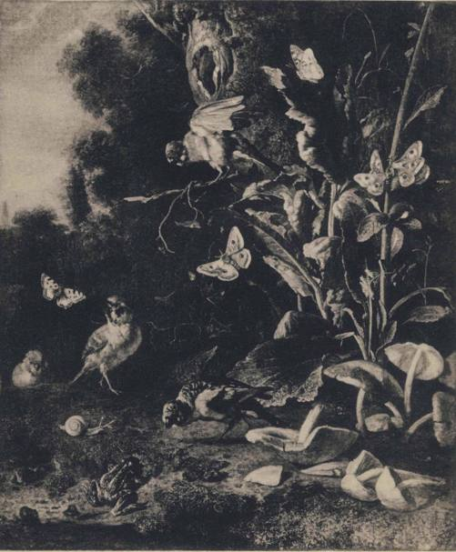
PLATE LXXIV. Melchior de Hondecoeter. Still life. London, National Gallery.
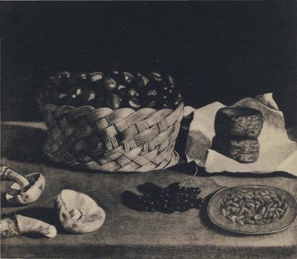
PLATE LXXV. School of Zurbaran, lyth-iSth century. Chestnuts, cheese, grapes, almonds,
and mushrooms, sp. tricholoma personatum.
Chicago Art Institute.
PLATE LXXVI
Mushrooms. From a fresco found at Herculaneum,
probably executed about A.D. 50. By
courtesy of the Museo Nazionale, Naples.
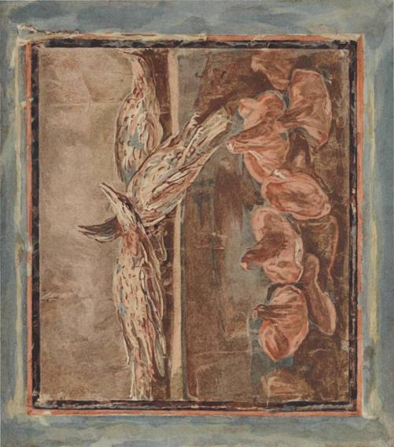
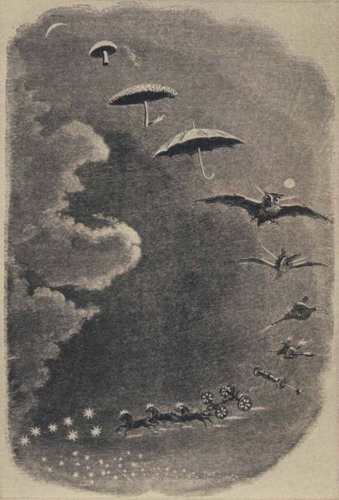
PLATE LXXVII. The dream. Woodcut after J.-J. Grandville.
From the Magasin Pittoresque, 1847.
Begeyn, about twenty years younger than Van Schrieck, revelled like him in
woodland subjects and mushrooms, as did also the mysterious Frans Hamilton,1
Anthonie van Borssom, and the German, Johann Albert Angermayer. Later in
the same vein came Rachel Ruysch, who lived into the mid-i8th century, and
Franz Werner Tamm, born in 1724. All of these distinguished artists loved their
rrmshrooms and knew them, though not like Van Schrieck. Van Schrieck's in-
fluence went even beyond them. It may be said of him that he effected the in-
tegration of mushrooms into the idiom of painters. Before him in all of the
painting of Europe the absence of mushrooms is conspicuous, if not absolute.
In settings where mushrooms would seem almost compulsory, there were none,
as though good taste compelled good artists to rub them out. After Van Schrieck,
mushrooms are never again a surprise. Though rare, they recur sporadically
and naturally whenever barnyard and outdoor themes seem to call for them.
Those other painters who borrowed Van Schrieck's peculiar theme were less
attached to the demonic import of the subject matter than he was. They admitted
more light than he did. They would show a patch of daylight sky. They intro-
duced daytime birds. They prettified the whole setting. Van Schrieck's paintings
repel the uninitiated by their darkness, while his followers' possess a superficial
charm as quaint period pieces. But what they gained in gentleness they lost
in focus. They were satisfied with fewer species of mushrooms, and showed
a tendency to stylize them, like stage properties. Their snakes and insects
tend to be less sharply delineated. In those art circles where the extraordinary
merits of the Dutch still-life painters are esteemed, Mignon and Ruysch today
rank above Van Schrieck. From one point of view this is a mistake. For con-
noisseurs both of cultural history and natural history Van Schrieck should stand
first. He is unique, a cultural trait d'union between the world of demonic folk
beliefs and the beautiful world of nature, where even the lowliest creatures are
infinitely precious for the understanding eye.
By good fortune we are privileged to attend the very act of artistic alchemy
by which Van Schrieck's peculiar quality was transmuted to suit the conventional
taste. The year is 1668. Van Schrieck after years of wandering is back in Amster-
dam, active and honored, in his early 5o's. Melchior de Hondecoeter, a brilliant
I. At a time when painting in Scotland was still in its infancy, a cluster of accomplished artists bearing the name
of Hamilton were in fashion in central Europe, exponents of the Dutch school. There were James and Frans,
whose earliest works seem to date from the i66o's, and James in time gave to the world three sons and one
grandson who were painters. James and Frans were presumably kin, but this is an inference unsupported by
evidence. It is a fair surmise that they emigrated from Scotland as small children under the Commonwealth,
for their schooling in art was wholly Continental. Such biographical data as appear in the reference works about
them are meager and dubious. It is strange that Scottish genealogists have failed to identify these distinguished
Continental Scots.
young artist of 34, paints a picture after the Van Schrieck manner, with mush-
rooms, lizard, and butterflies. We can study it today in the Rijksmuseum in
Amsterdam. He retains Van Schrieck's nocturnal effect, devising a powerful
off-stage light to the left to bathe with dazzling effulgence the foliage and
mushrooms on the right. The mushrooms, well delineated, belong to the genus
hypholoma and are probably of the species hypholoma fasciculare. Finches in
full panoply occupy the center of the canvas, aroused by the presence of a lizard.
Some daylight enters from the upper right. The artist signs his painting on the
tree-trunk below the knot-hole, and no one challenges the attribution. Honde-
coeter was destined to win renown for his skill in painting birds. Almost two
centuries before Audubon, he achieved the impossible by catching the stance
of a bird in its moment of intense vital performance, and in this work he was
already on his chosen path of special achievement.
Now let us turn from the Hondecoeter in the Rijksmuseum to another version
of the same painting in the National Gallery in London. It is signed above the
knot-hole and dated I668.1 Here the artist has reassembled the mushrooms,
foliage, birds, butterflies, tree-trunk, and patch of sky. Each of the elements
carries the same light effects as in the Amsterdam work, but with the re-
distribution of the parts, the Van Schrieck effect of concentrated off-stage high-
lighting is sharply diminished. In these two paintings we see the brilliant artist
of the younger generation, still under the spell of Van Schrieck, experimenting
with the master's methods. In the second he retains mushrooms and Vermin'
but abandons the nocturnal trance.
1 here is a noteworthy thing about the mushrooms painted by Van Schrieck
and those who followed in his wake: for them all, the attraction of the mush-
room seems to have been visual. They discovered that mushrooms, bathed
in folklore, were also beautiful, and then they stopped. Is there a single Dutch
or German painting of the iyth or i8th century in which mushrooms appear
in a context of food; These hereditary mycophobes permitted themselves to
be seduced by mushrooms, but not all the way. More than a century before
Van Schrieck, Jan Brueghel the Elder, known as Velvet Brueghel, executed
I. In the past this painting has been attributed to Abraham Mignon. We discovered its kinship with the Honde-
coeter in Amsterdam and submitted to Frits Lugt, the authority on Dutch still-lifes, the problem presented by
the diverse attributions. After carefully examining the picture in London, Professor Lugt wrote us that he failed
to see in it the harder, more metallic style of Mignon. Of the signature in the London painting, only 'M' clearly
survives, and he interpreted this as the 'M' of 'Melchior d'Hondecoeter'. Afterwards, applying a lens to the
area of the signature, we clearly distinguished also the 'd' that precedes the artist's surname. The traditional
attribution to Mignon is certainly erroneous, based on a mistaken interpretation of the surviving initial of
the name.
two series of paintings to illustrate the corporeal senses, and today they hang in
the Prado. Twice he represented the delights of the palate in a riot of foods of all
kinds, but among them are no mushrooms. Admirable as Van Schrieck and
his followers were, it seems certain that they followed in Jan Brueghel's train
and never knew the epicure's delight in a cep or morel. As in the case of Thoreau,
mushrooms never made their saliva run. When they painted mushrooms with
exquisite perception, they made no distinction between the edible and the
inedible: clearly for them all were inedible. Thus Paolo Porpora in his canvas
that we reproduce coils his serpents and lizards through a cluster of delectable
morels. A painter discovers and reveals such truth as lies within the compass of
his visual dimension, and these Dutch artists triumphed over their ancestral
mycophobia within the medium at their command but no further.
In Van Schrieck's time we have seen that mycophagy was burgeoning among
the Flemings, but this cultural innovation seems to have had no parallel among
the Dutch. How odd that the line of demarcation between the Protestant and
Catholic worlds should also separate the mycophobes from the mycophagists!
There must be exceptions, but just as no Dutchman or German seems to have
painted mushrooms in a context of food, so we have found no painter after
Brueghel identified with Brussels or Antwerp who used mushrooms as a
demonic symbol. Though the still-life artists of the iyth century never tired of
painting food, it is a fact that even in Flanders mushrooms figure seldom in those
paintings. In addition to those that we have discussed on pages 130 if., there is a
superb still-life of the school of Zurbaran in the Art Institute of Chicago, wherein
two specimens of the psalliota arvensis (as we think them to be) appear, along
with chestnuts, cheese, almonds, and grapes. Robert Graves in Majorca possesses
a canvas dated 1656 with a fine show of rovellons (lactarius sanguifluus), which
the Catalans esteem above all others, and this canvas is attributed to the Majorcan
artist Antonio Mesquida.
The oldest painting of mushrooms in the world is a fresco discovered in the
excavations at Herculaneum early in the i8th century and now hanging in the
Museo Nazionale in Naples. It must have been executed around'A.D. 50,
perhaps at the very moment when Pliny was composing his chapters on the
fungi for his Historia Naturalis. These mushrooms seem to belong to the genus
lactarius and are obviously for eating. All of the specific names for mush-
rooms that we know from classical Latin have been securely identified, and
there is none that we can attach to those in this ancient fresco. Here is a whole-
some reminder of how little we really know about the mycological knowledge
of the ancients, for we may consider it virtually certain that the ancient in-
habitants of Herculaneum knew the mushrooms of the fresco well and had a
name for them.
There is a remarkable thing about this Herculaneum fresco. Let the reader
compare our reproduction of it with Jan Fyt's canvas, Plate XXIV. In both,
mushrooms are scattered in the foreground. In both there are thrushes, stiff
in death, laid out on a ledge above and behind, in the fresco mistle thrushes
or turdus viscivorus, in Fyt both mistle thrushes and fieldfares or the turdus
pilaris. These artists separated by sixteen centuries hit on the same objects for
their two still-lifes, and the same composition. The fresco could not have
influenced Fyt, of course, for apparently it was not exhumed from its volcanic
grave until a century after Fyt's time.
1 he mushroom in Renaissance art was originally and principally demonic
in suggestion, as we have seen. In the lovely paintings of Rachel Ruysch and
F. W. Tamm this demonic vein had spent itself, petering out in the placid
calms of the i8th century enlightenment. Mycophagy was gaining ground,
and in addition Gainsborough and later Corot discovered the idyllic beauty
of mushroom gathering - a far cry from the terrors of the mushroom in the
world of Bosch and Brueghel and Civetta. But the old theme was not altogether
dead: after all, it had sprung from the very tap roots of Europe's earliest cultural
world, the mycophobia of the Germanic world that gave us Bosch and Brueghel.
One of the eminent illustrators in 19 th century France was the artist J.-J.
Grandville. He died in the spring of 1847, at 44 years of age. On the eve of his
death he submitted to the Magasin Pittoresque two woodcuts of astonishing
quality, which in due course that journal published.1 These last works of his
were pictorial representations of dreams. The first does not concern us. We
reproduce the second and suggest that the reader examine it with some attention.
Grandville submitted his explanation for this dream, a banal sequence of mean-
ingless images, as he thought. Perhaps this design expressed more than even so
sensitive an artist as Grandville was aware of. Reading from top to bottom,
the sliver of a moon emerges as a mushroom. By way of an intermediate meta-
morphosis, the mushroom becomes a parasol, the chattra that was the Sanskrit
metaphor for the mushroomic world. The parasol then transforms itself into a
bat, le hot volant of French demonic folklore. The bat, in turn, becomes a bellows,
one of that family of distensible sacs which we found metaphorically linked with
the fungal world in various primitive usages. By a strange chance, a number of
these successive designs are emitting a flame, that very flame which with its
i. pp. 210-214,1847.
supernatural and erotic meaning seems to have been at the taproot of Europe's
fungal associations. The bellows, indeed, becomes two flaming hearts transfixed
by a sword, which in turn give way to a rolling spindle, and then a four-wheeled
chariot drawn by flaming steeds in the direction of a starry firmament.
How strange it is that Grandville in the final emanation of his genius should
have struck a chord so nicely attuned to the whole argument of our book!
It is as though in his subconscious being this ipth century Frenchman recapi-
tulated the emotions of his race vis-a-vis the fungal world since earliest times,
and then gave those emotions expression in a design of breathtaking simplicity
and beauty. It is almost as though, with a hundred years of anticipation, he was
putting the seal of his subconscious approval on a number of our suggestions.